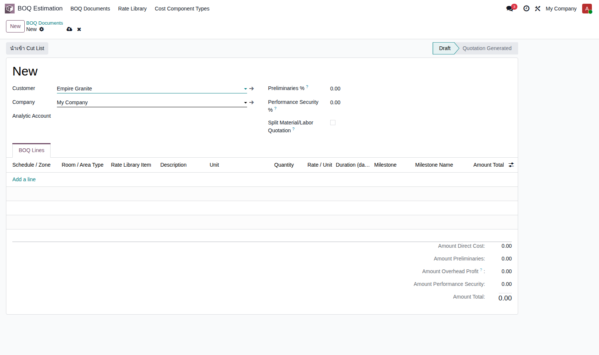
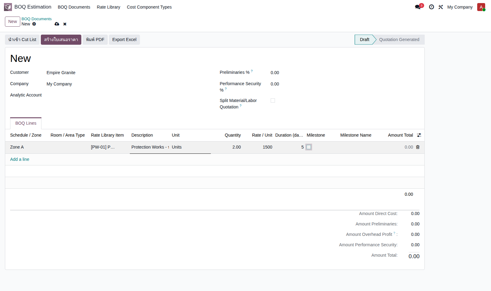
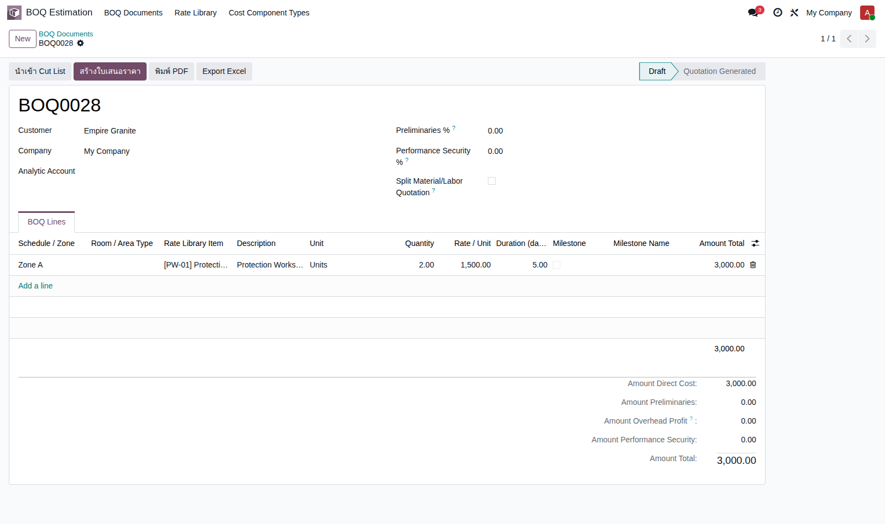
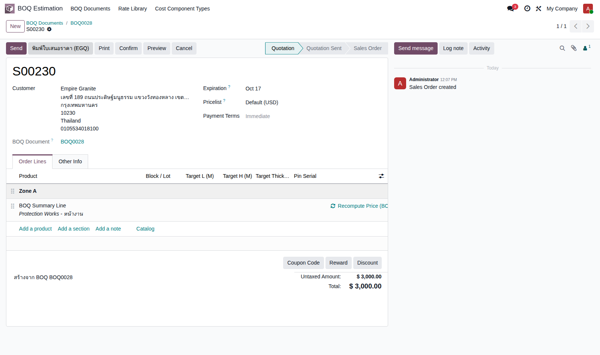

Empire Stone × Empire Granite — QA · แนวคิด EG-321
Golden Path — สวิตช์ BOQ
อัปเดตล่าสุด: 17 ก.ย. 2026
สวิตช์ BOQ = ใบเสนอราคาเริ่มต้นจากเอกสารประเมินราคา (Bill of Quantities) ก่อน แทนที่จะพิมพ์รายการลงใบเสนอราคาตรงๆ — ใช้เมื่อสินค้า/บริการมีหลายรายการ ต้องคิดราคาละเอียดก่อนเสนอลูกค้า เอกสารนี้เป็นสวิตช์อิสระจากสวิตช์ Project อย่างสมบูรณ์ (สร้างใบเสนอราคาจาก BOQ ได้โดยไม่ต้องติ๊ก Sold as Project เลย)
4Test Case ทั้งหมด
3High Priority
1Medium Priority
ทราบแล้ว ยังไม่ทำ: เอกสารนี้ยังไม่มีปุ่ม Export Excel และยังไม่ครอบคลุมการใช้ Rate Library ที่มี Cost Component หลายรายการ (ตัวอย่างจริงนี้ตั้งราคา/หน่วยตรงๆ เพื่อความเร็ว) หรือฟีเจอร์ Split Material/Labor Quotation (ADR-031) — ทำเวอร์ชันย่อไว้ก่อนประชุมทีม 17 ก.ย. จะขยายเพิ่มรอบหน้า ดูตัวอย่างเต็มรูปแบบกว่าได้ที่ "BOQ Estimation + Sold-as-Project" ในหมวด Draft Document
สร้างใบเสนอราคาจากเอกสาร BOQ
ไม่ต้องเปิดสวิตช์ Project เลย — อิสระจากกันจริง
| TC ID | Scenario | Precondition | Steps | ข้อมูลตัวอย่าง | Expected Result | Priority | หน้าจอจริง |
|---|---|---|---|---|---|---|---|
| TC-SW-BOQ-01 | สร้างเอกสาร BOQ ใหม่ ระบุลูกค้า | มีลูกค้าอยู่แล้วในระบบ |
|
ลูกค้า = Empire Granite | ฟอร์ม BOQ Document ใหม่เปิดขึ้น พร้อมข้อมูลลูกค้า | High |  |
| TC-SW-BOQ-02 | เพิ่มบรรทัด BOQ เลือก Rate Library Item เลือก Rate Library Item แล้ว Description/Unit เติมให้อัตโนมัติ — Zone/Duration/Milestone กรอกตรงบรรทัดนี้เลย เป็นข้อมูลเดียวกับที่จะถูกส่งต่อไปยัง Sale Order Line ตอน generate quotation (ตาม ADR-069) |
ทำ TC-SW-BOQ-01 เสร็จแล้ว และมี Rate Library Item อยู่แล้ว |
|
Zone = "Zone A" Rate = [PW-01] Protection Works - หน้างาน Quantity = 2 Rate/Unit = 1,500 |
บรรทัดคำนวณ Amount Total = 3,000.00 อัตโนมัติ (Quantity × Rate) | High |  |
| TC-SW-BOQ-03 | บันทึกเอกสาร BOQ | ทำ TC-SW-BOQ-02 เสร็จแล้ว |
|
- | บันทึกสำเร็จ ได้เลขที่เอกสาร (ตัวอย่างจริง: BOQ0028) สถานะแสดง "Draft" | Medium |  |
| TC-SW-BOQ-04 | กด "สร้างใบเสนอราคา" (Generate Quotation) ใบเสนอราคาที่ได้ยังไม่ได้ติ๊ก Sold as Project เลย — สวิตช์ Project แยกอิสระจริง ต้องไปติ๊กเพิ่มเองทีหลังถ้าต้องการ |
ทำ TC-SW-BOQ-03 เสร็จแล้ว |
|
- | ได้ใบเสนอราคาใหม่ (ตัวอย่างจริง: S00230) ยอดรวม 3,000.00 ตรงกับ BOQ, มีบรรทัด section "Zone A" คั่นตามที่ตั้งไว้, field "BOQ Document" บนใบเสนอราคาชี้กลับไปที่ BOQ0028 | High |  |